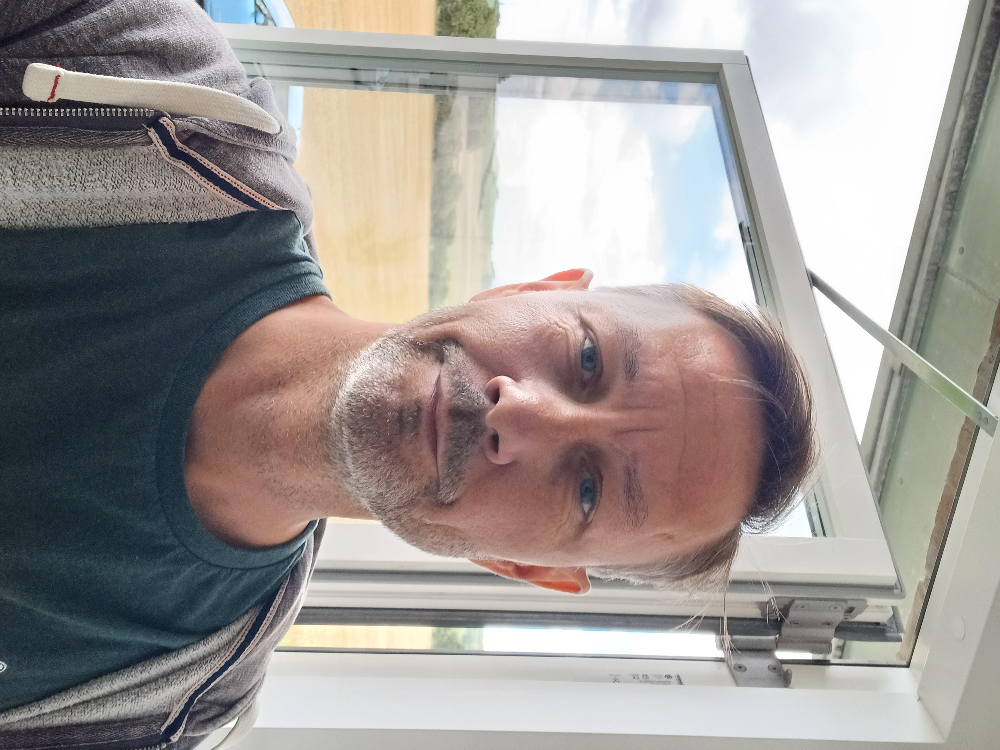

Hvem er jeg
Mit navn er Jakob Bundgaard.
Jeg har en baggrund som kok med over 20 års erfaring i restaurationsbranchen, men har for nylig skiftet karrierevej til at blive datamatiker. Denne ændring blev drevet af et ønske om at prøve noget nyt og en længerevarende interesse for teknologi og softwareudvikling.
I min tid som kok udviklede jeg en stærk arbejdsmoral og evnen til at arbejde effektivt under pres, egenskaber som jeg har taget med mig ind i min nye karriere. Jeg er dedikeret og stræber efter at levere resultater, der tilfredsstiller alle involverede parter. Jeg er kendt for at være åben og imødekommende, og jeg værdsætter muligheden for at lære fra andre såvel som at dele min egen viden.
Efter at have skiftet til IT-branchen, afsluttede jeg min uddannelse som datamatiker i 2022. Jeg følte dog, at jeg havde mere at lære, især inden for front-end udvikling, hvilket førte mig til at forfølge en videreuddannelse i webudvikling på Erhvervsakademi Aarhus. Jeg er ivrig efter at dykke dybere ned i dette område og udvide mine færdigheder.
Udover mit professionelle liv nyder jeg at spille guitar, klatre et par gange om ugen og spille computerspil. Derudover er jeg lidt af et madøre, og elsker at stå i køkkenet og lave noget dejlig mad. Disse aktiviteter hjælper mig med at opretholde en god balance mellem arbejde og fritid.
At gå fra at være kok til at blive softwareudvikler var ikke kun et skift i karriere for mig; det markerede også starten på en ny fase af personlig udvikling og læring. Med en baggrund præget af hårdt arbejde og en nysgerrighed efter altid at lære noget nyt, glæder jeg mig til at bringe mine færdigheder og entusiasme ind i de projekter og teams, jeg kommer til at arbejde med fremover.
